怎么相处
座位、体育课、别盯着看
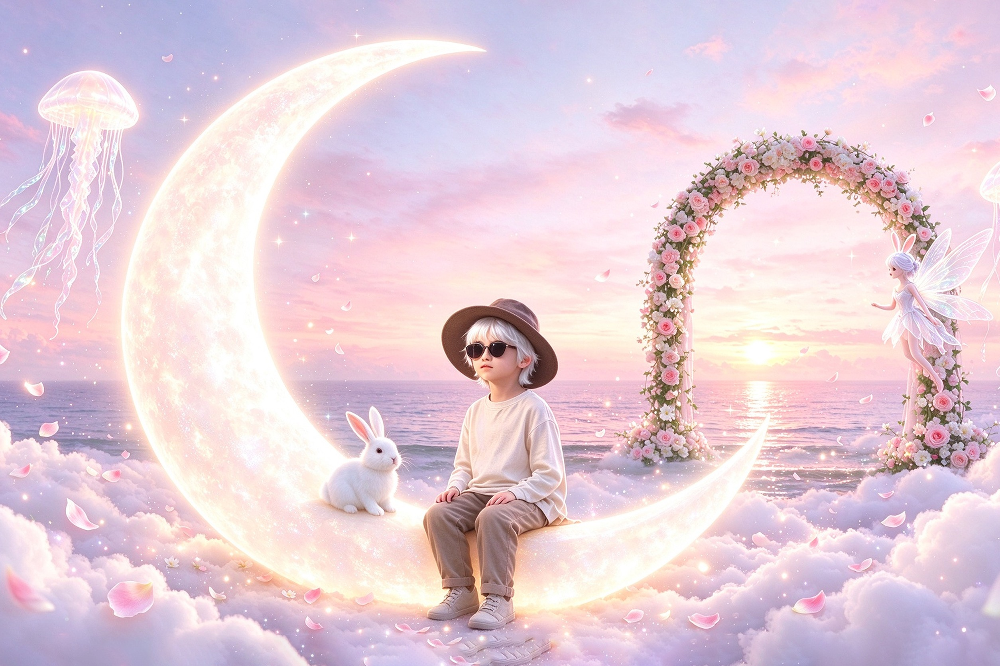
给月亮天使们的日常
把防晒、心情和故事，都安放在月亮上
选完随时能在顶栏切换 · 试试白天模式
晚上好9 月 10 日 · 上弦月
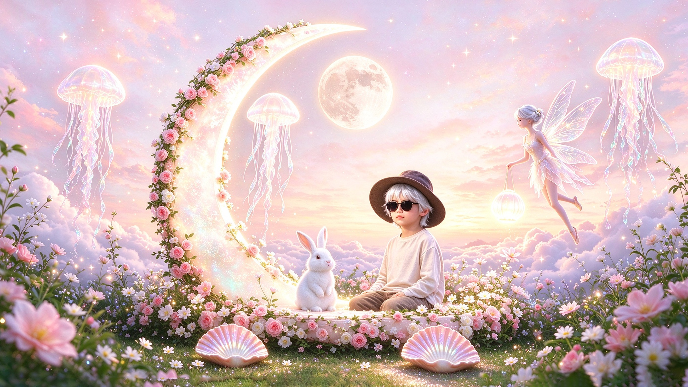
11:00-16:00 尽量待在室内。已涂防晒，1 小时后补。
上弦月 · 有点亮，也有点没准备好
断掉也没关系，月亮缺一角也还是月亮。
9 月 13 日 皮肤科随访
公开区 · 这里不开放评论，只送星。身体的解释权，先留给自己。
岛外人也在这里 · 你可以读、可以送星，但不会看到谁在生病、谁在住院。这里只放他们愿意公开的那部分。
今天第一次戴着帽子去了海边。风很大，沙子硌脚，但我在。
复诊结果一切正常。这次没有哭。
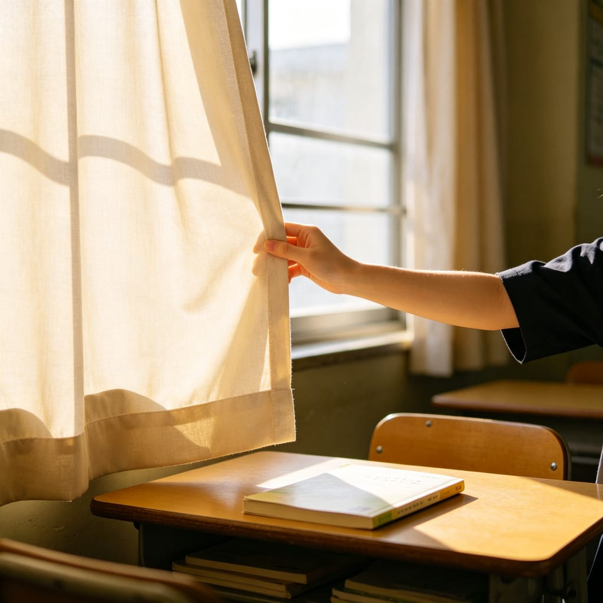
想对三年前的自己说：你后来交到了会主动帮你拉窗帘的朋友。
岛外人暂时不能在打气墙发帖。
先完成「认识它」这一课，就可以申请成为守护者。
匿名 · 私密 · 不显示身份，24 小时后自动沉底。没有点赞，也没有比较。
今天不想被看见，但想说一句：真的好累。
2 分钟前 · 2 句回应我也是。今天只想缩在角落里。
不用被看见也可以。我在这儿。
有人愿意和我换座位吗，我怕窗边。
18 分钟前 · 2 句回应我也怕窗边，后来换到了靠墙的位置。
我们班也有人换过，老师没多问。
今天没人问我眼睛为什么这样。就很开心。
1 小时前 · 3 句回应这种日子值得记下来。
我今天的月亮也是满的。
希望明天也没有人问。
妈妈说我越来越会照顾自己了。
3 小时前 · 2 句回应妈妈也是慢慢学会的。
被这样说一次，能记很久。
明天有体育课，我把帽子和长袖都准备好了。
5 小时前 · 3 句回应体育课最麻烦的就是太阳。
我也开始前一晚就把东西放好。
我上周也这么准备，那天过得挺好。
什么都没做的一天。也算过完了。
7 小时前 · 2 句回应什么都没做，也是一种休息。
我今天也是这样过来的。
这周有点撑不住，今晚决定早点睡。
9 小时前 · 3 句回应我这周也是。今晚一起早点关灯。
我上周也这样，睡了一觉好多了。
不用一直撑着，我们都在这儿。
第一次自己坐公交回家，选到了不晒的那一边。
11 小时前 · 2 句回应恭喜！这一步不容易。
我也在练着自己坐车。
抽血的时候，护士姐姐说我的头发很好看。
昨天 · 3 句回应这样的护士真好。
我抽血的时候一直不敢看。
你的头发本来就很好看。
这里是他们卸下解释的地方。你想了解的那种"真实的感受"，在「月亮故事 · 听 TA 说」里，他们愿意讲给你听。
不开放 1v1 私聊 · 房间由成年志愿者主持，全程有值班老师。未成年人的安全感比社交效率重要。
你先旁听 · 岛外人可以安静地听。想开口，需要先通过"守护者"培训。
📜 房间守则 · 进入夜谈室前请先阅读，点击查看全部 8 条守则
下课时同学问的那些问题，我们一起去接。
怎么挑、怎么跟老师说、怎么不被盯着看。
关灯之后想不明白的那些事，先放在这里。
守护者房间：怎么跟孩子谈"你和别人不太一样"。
怎么跟老师开口：我需要在阴凉的那一边。
守护者房间：孩子不肯戴帽子的时候，怎么办。
一起读一位岛民公开写下的那篇日记。
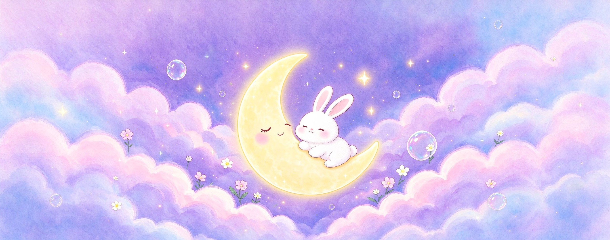
"你不需要变得不敏感，
你只需要遇到更温柔的光。"
今天试着对一个人说："我的眼睛怕光，不是怕你。"

17 岁 · 高二 · 4 分 12 秒
13 岁 · 初一 · 3 分 08 秒

20 岁 · 大一 · 5 分 40 秒
3,182 颗星 · 漫画
2,470 颗星 · 科普
1,905 颗星 · 音频

为什么会有白化病

畏光、眼球震颤、低视力

SPF、衣物与时间段

给同学、老师、HR 的话术

给守护者

复查 · 带什么 · 问什么
按顺序走完 9 课，你会知道怎么靠近一个人，而不是怎么打量一个人。
已完成 4 / 9 课、听过 3 个故事、送出 27 颗星。走完 9 课并答对全部测验，就能拿到守护者徽章。
已经陪你看了 12 个晚上
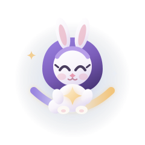
这个月你记录了 18 晚，其中 5 晚是满月。
这个月满月最多，你有 5 个晚上心情很好。继续加油～
已绑定 · 可以看到复查提醒
朋友、老师或信赖的人都可以
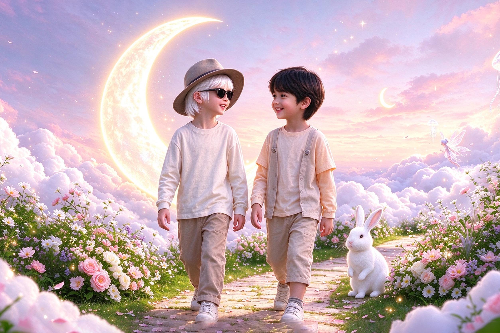
先了解，再靠近你正在以「岛外人」的身份参观月亮岛
下一步：第一次见面可以说什么。走完 9 课并答对测验，你会拿到守护者徽章。
别人问起身体的时候，最有用的是不夸张、不追问。这一课讲三句可以直接用的话。
座位、体育课、别盯着看
6 条最常被信错的话
3 段真实故事的音频
岛外人可以走到哪一步
写下这条边界，是为了让岛内人不必反复判断"这句话能不能被外人看到"。
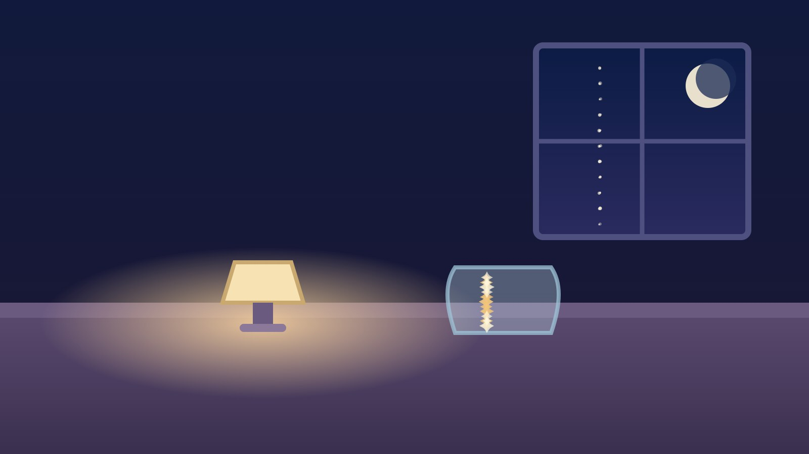
今天是第 12 个晚上，兔兔在等你
再攒 8 颗，兔兔的小屋就有一扇新窗户啦。
躺好，闭上眼睛，兔兔念给你听
4 分钟 · 讲给怕黑的小朋友
3 分钟 · 关于防晒的故事
5 分钟 · 关于看不太清这件事
关掉屏幕也可以听。声音会在 15 分钟后自动停下来，不吵醒你。
家长守护视图你能看到照护信息，看不到孩子的心情内容
孩子今晚记录了一轮新月，但没有写内容。月亮岛不会把孩子的情绪日记交给家长——如果他愿意讲，他会自己告诉你。
11:00–16:00 建议待在室内。孩子今天有体育课，已自动提醒老师把活动调到上午第一节。
皮肤科随访 · 9 月 13 日 上午
屈光度较半年前变化不大，医生建议继续戴滤光镜
目前还没有预约
老师您好，我是小宇的家长。小宇有白化病，皮肤不能长时间晒太阳，眼睛怕光、看远处会吃力。
想麻烦您三件事：座位尽量靠前并避开窗边；户外课请他戴帽子和滤光镜；如果他看黑板吃力，允许他走近一点。
他和其他孩子没有区别，只是需要一点光线的照顾。谢谢您。
「家长也在学」房间每周三晚开，主持人是医生和几位家长。很多家长的第一句话都是：我其实比孩子更怕。
3 小时前 · 来自打气墙
今天第一次戴着帽子去了海边。风很大，沙子硌脚，但我在。
海边！我一直不敢去，怕晒。你戴的是什么帽子？
"但我在"这三个字好有力量。我也想去一次海边。
宽檐帽 + 防晒衣，涂了 SPF50+。早上七点去的，人少光也弱。
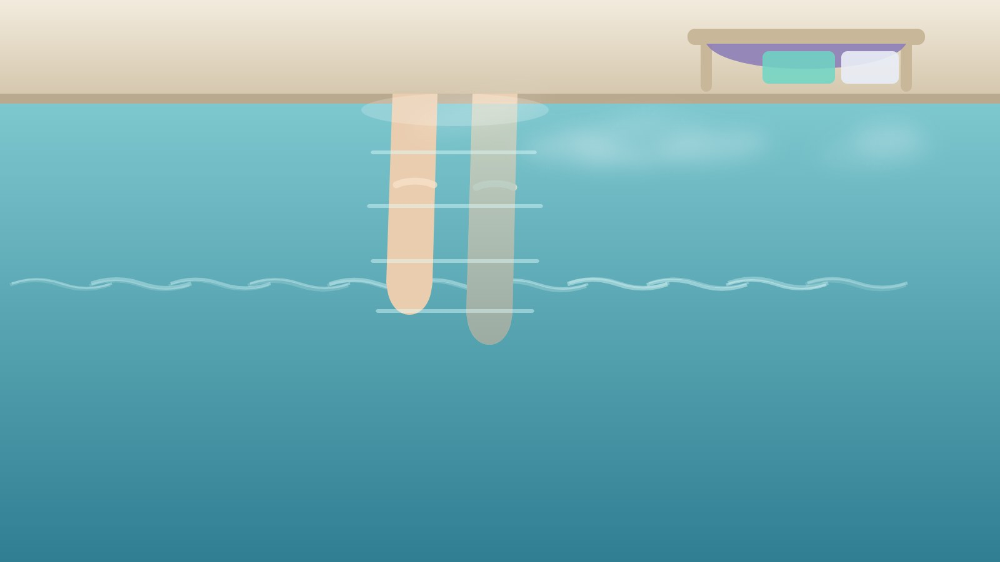
我小时候以为，只有我一个人怕光。后来发现，是很多人都还没学会把灯调暗一点。
高二那年，我终于鼓起勇气跟班主任说了。她没有说"你忍一忍"，而是说"我们一起想办法"。
后来教室的窗帘换成了遮光的，我的座位从窗边调到了中间。那天阳光照进来的时候，我第一次觉得，教室也是可以待的地方。
如果你也在怕光，不是你太娇气，是这个世界还不够温柔。你可以说出来的。
13 岁 · 初一 · 3 分 08 秒
20 岁 · 大一 · 5 分 40 秒

01
误区"白化病会传染。"
事实不会。它是基因突变导致的遗传病，跟接触、一起吃饭、握手都没有关系。

02
误区"他们是外国人 / 混血。"
事实不是。白化病在全世界各人种、各民族中都会出现，中国人群发病率约为 1/18000。

03
误区"他们智力有问题。"
事实白化病主要影响黑色素合成，一般不影响智力。视力问题可能影响学习，但不是智力障碍。
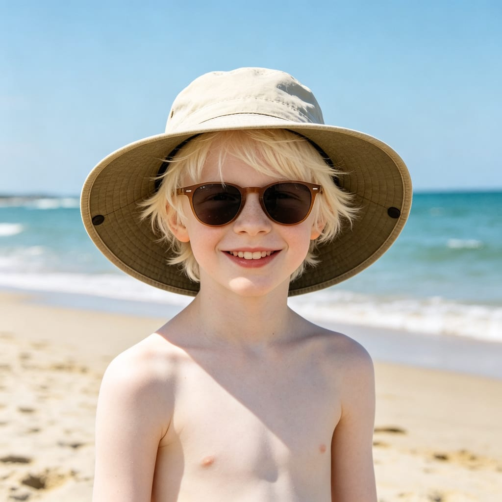
04
误区"他们不能晒太阳，所以很脆弱。"
事实做好防晒（帽子、防晒衣、防晒霜）就可以正常出门。怕光不等于脆弱。

05
误区"白化病就是皮肤白，没别的。"
事实眼部损害更常见：畏光、眼球震颤、高度近视、视力低下。皮肤长期暴晒有皮肤癌风险。

06
误区"他们不能结婚生子。"
事实可以。多数为常染色体隐性遗传，配偶不携带致病基因时，子女不会患病。建议婚前做遗传咨询。
学完这一课，来测一测你记住了多少。答错会告诉你哪句被说反了。
01
色素合成出了问题，不是病，也不会传染。
白化病是一种先天性遗传病，由于基因突变导致黑色素（决定皮肤、头发、眼睛颜色的色素）合成障碍。患者皮肤、毛发、眼睛色素减少或缺失。
02
几个基因的变异，会让黑色素合成受阻。
不是"晒太阳少"，也不是"营养不良"。是控制黑色素合成的基因发生了突变，目前已发现至少 18 种相关基因。出生时就已决定，后天无法"变黑"。

03
多数是隐性遗传，父母往往并不患病。
多数为常染色体隐性遗传：父母双方都是携带者（不发病），子女有 25% 概率患病，男女均等。少数类型（如 OA1）为 X 连锁隐性，男性多见。

04
中国约 1/18000，任何民族都会出现。
中国人群发病率约为 1/18000，携带者频率约 1/60。全世界各人种、各民族都会出现，不是某个地区或民族特有的。全球约有 1/17000 人患有某种类型的白化病。

05
分 OCA、OA 和少见的综合征型三类。
① 眼皮肤白化病（OCA）：皮肤、毛发、眼睛都受影响，最常见；② 眼白化病（OA）：主要影响眼睛，皮肤毛发颜色接近正常；③ 综合征型白化病：如 Hermansky-Pudlak 综合征，可能伴随出血倾向或肺部问题。
学完这一课，来测一测你记住了多少。
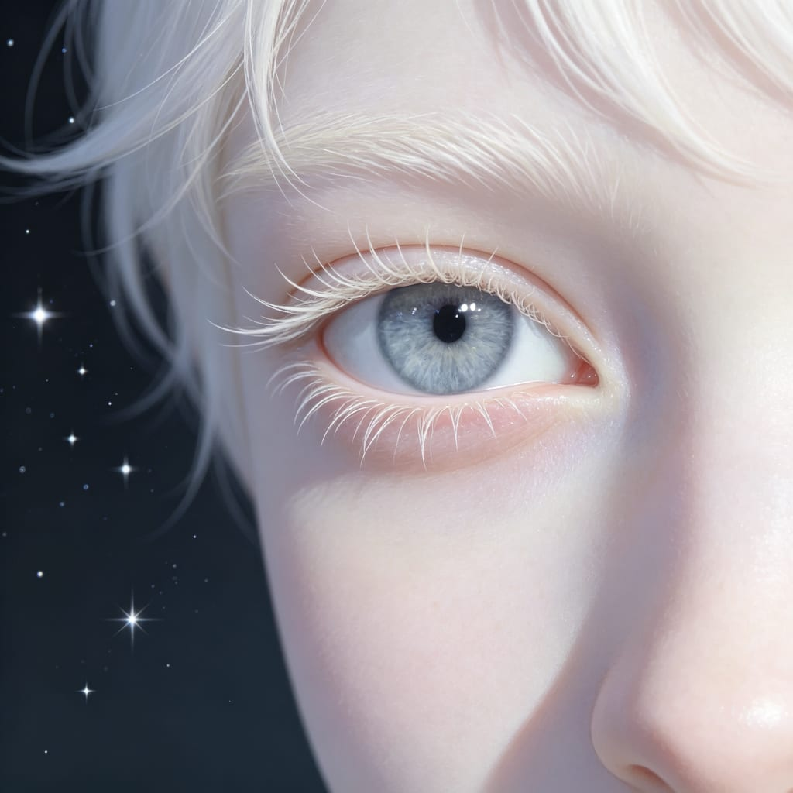
01
不是怕光，是强光下无法收窄瞳孔。
虹膜色素少，无法有效阻挡光线，强光下会刺眼、流泪、眯眼。这不是"矫情"，是真实的生理反应。滤光镜（不是普通墨镜）可以有效缓解。

02
眼球会不自主地轻微抖动，多数不影响生活。
眼睛不自主地左右或上下摆动，自己控制不了。这是因为视网膜黄斑发育不良，大脑无法稳定注视。多数患者通过"代偿头位"（歪头）来找到一个相对清晰的注视角度。
03
近视或远视很常见，需要及时配镜。
多数患者有高度屈光不正（近视或远视），需要长期戴眼镜矫正。但即使戴上眼镜，视力也往往达不到 1.0，因为核心问题是视网膜和视神经的发育，不是单纯的屈光问题。

04
低视力靠助视器，不是「看不清就算了」。
多数患者最佳矫正视力在 0.1–0.5 之间，属于低视力范围。但低视力不等于"看不见"，更不等于"不能学习/工作"。借助助视器、大字教材、合理的座位安排，完全可以正常学习生活。
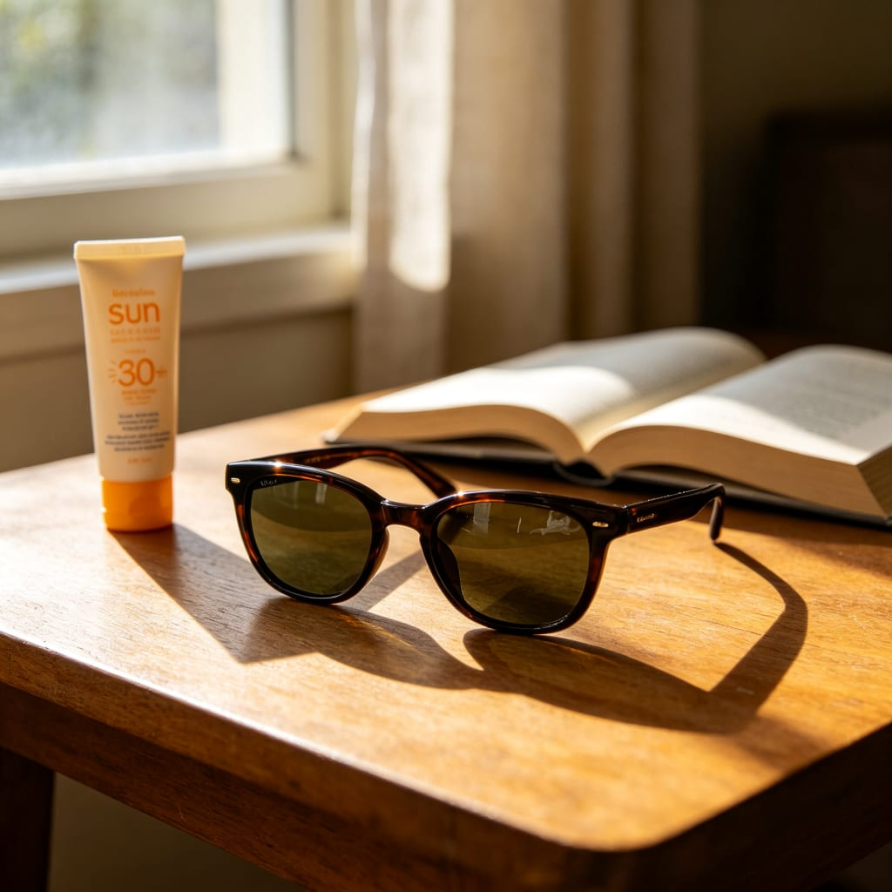
05
选带侧挡、能过滤强光的镜片。
① 不是普通墨镜，要选能过滤紫外线和短波蓝光的医用滤光镜；② 室内可以戴浅茶色（10%–20% 透光率），户外戴深茶色或灰色（5%–10%）；③ 镜框要大，能挡住侧面来的光；④ 建议在眼科医生指导下验配。
眼球震颤可以自己控制吗？滤光镜和普通墨镜有什么区别？
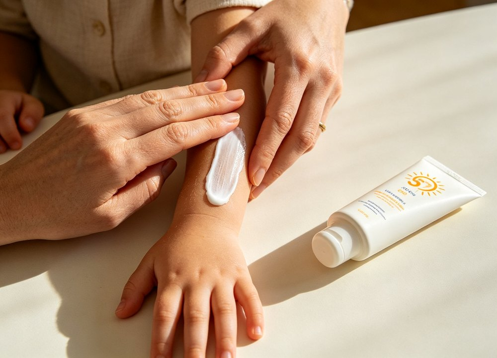
01
遮挡优先，防晒霜是补位而不是主力。
白化病患者皮肤缺乏黑色素保护，对紫外线极度敏感。防晒的核心原则是"能挡住就不涂"：宽檐帽 > 防晒衣 > 防晒霜。物理遮挡比化学防晒更可靠、更持久。

02
看 SPF 和 PA，也要看涂够没涂够。
① SPF50+ 起步，PA++++（最高级）；② 优先选物理防晒（氧化锌/二氧化钛），温和不刺激；③ 出门前 15–20 分钟涂，让皮肤吸收；④ 用量要足：面部约一枚硬币大小，全身约 30ml；⑤ 每 2 小时补涂一次，出汗或游泳后立即补涂。
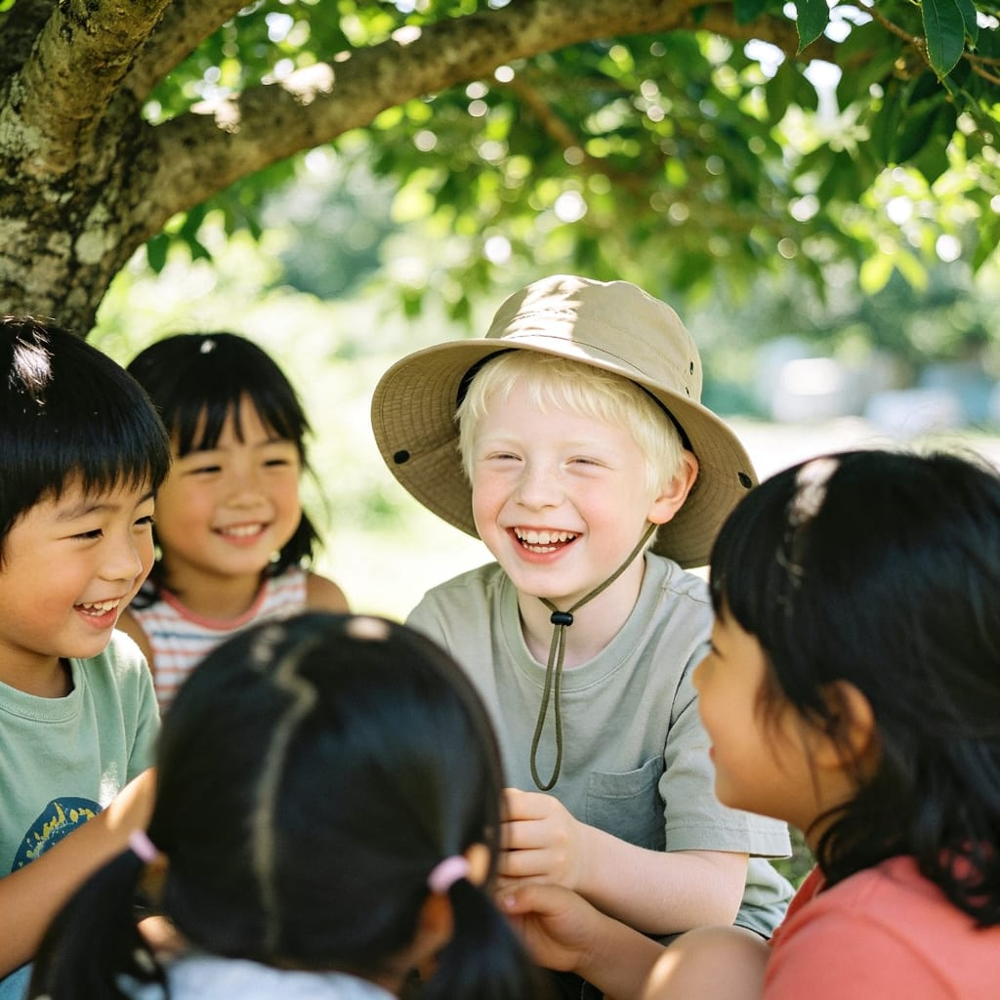
03
长袖、深色、织得密，比颜色更重要。
① 选 UPF50+ 的防晒衣，普通 T 恤 UPF 只有 5–10；② 颜色选深色（藏青、黑色），比浅色防晒效果好；③ 织法紧密、不透明的面料；④ 长袖长裤优先，露出的皮肤都要涂防晒；⑤ 宽檐帽（帽檐 ≥ 7cm）能挡住脸和脖子。
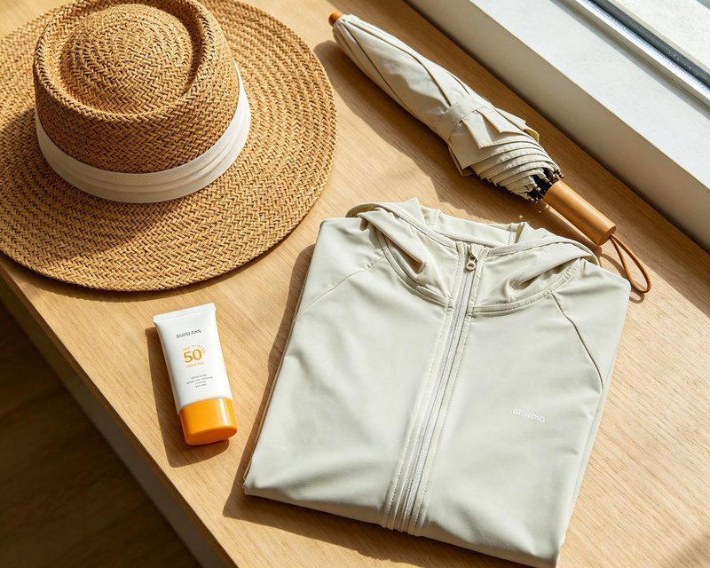
04
UV 3 以上就要遮挡，8 以上少出门。
① UV 0–2（低）：正常活动，戴帽子即可；② UV 3–5（中）：涂防晒+帽子+太阳镜，10–16 点尽量在阴凉处；③ UV 6–7（高）：全套防晒，避免 11–15 点户外；④ UV 8–10（很高）：尽量待室内，必须出门时全套防晒+打伞；⑤ UV 11+（极高）：避免所有户外活动。
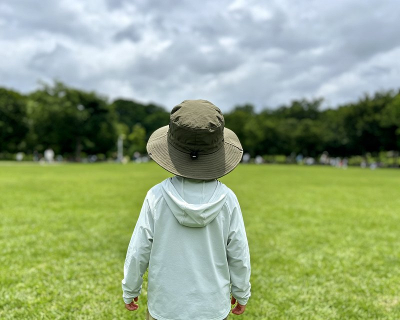
05
阴天一样有紫外线，云层挡不住。
❌ "阴天不用防晒"——紫外线能穿透云层，阴天也要防；❌ "在窗户后面就安全"——普通玻璃挡 UVB 但挡不住 UVA；❌ "涂了防晒就可以随便晒"——防晒不是万能的，遮挡和避开高峰更重要；❌ "冬天不用防晒"——紫外线全年都有，雪地反射更强。
SPF 和 PA 分别代表什么？阴天需要防晒吗？

01
一句话就够：「天生的，不传染。」
"我有白化病，是一种遗传病，皮肤和头发缺少色素，所以比较白。我怕太阳，出门要戴帽子涂防晒。眼睛也不太好，看远处会吃力。但我和你们一样，可以一起学习一起玩。"——简单、直接、不自卑，把"我需要什么"说清楚。
02
入学前先说，比被误解后再解释好。
建议家长出面沟通，重点说三件事：① 座位：尽量靠前、避开窗边直射阳光；② 教材：需要大字版或电子课件，允许用平板放大；③ 户外：体育课允许戴帽子和滤光镜，剧烈阳光下可在阴凉处见习。可以把医生的诊断证明和建议复印给老师。
03
说明需要的便利，不必交代全部病史。
① 不是必须主动说，但如果岗位有户外作业、长时间看屏幕等要求，建议提前沟通；② 重点说"我能做什么"，而不是"我不能做什么"；③ 可以申请合理便利：工位避开阳光、显示器可调节亮度、允许戴滤光镜；④ 白化病不属于传染病，不影响绝大多数办公室工作。

04
你不需要为别人的好奇负责。
遇到好奇的目光或提问，可以选择：① 简单解释："我有白化病，是一种遗传病，不传染。"② 幽默化解："我是月亮派来的，怕太阳。"③ 不想说时："这是我的个人情况，不太想聊这个。"——你没有义务向每个人解释，保护自己的情绪比满足别人的好奇心更重要。
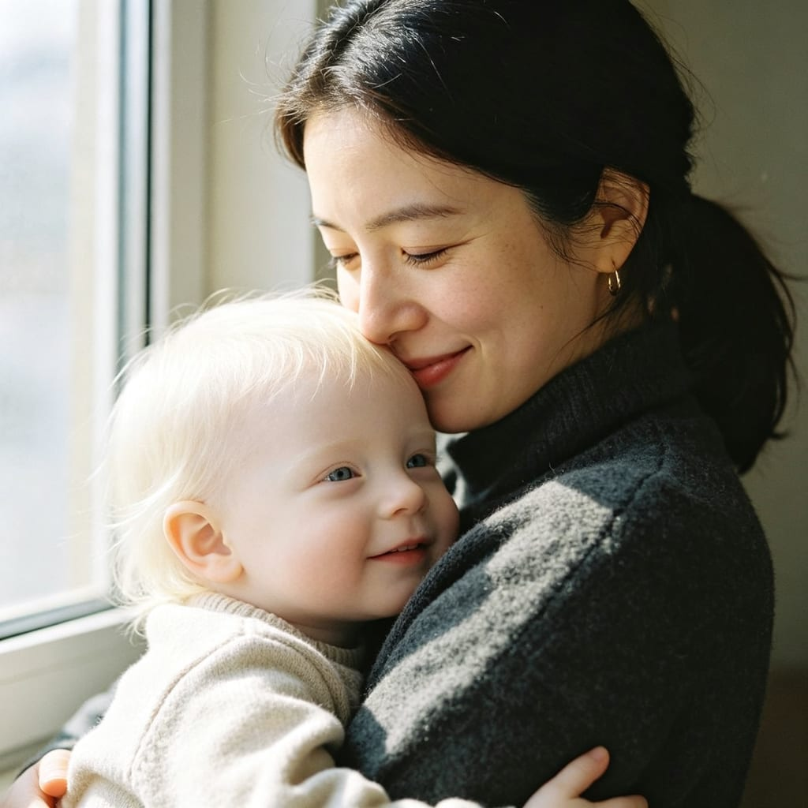
05
先允许自己在意，再练习不在意。
① 被盯着看不是你的错，是对方的不礼貌；② 不用因为别人的无知而生气或自卑，你可以选择"教育"或"忽略"；③ 找到同频的人很重要，月亮岛的社区就是你的后盾；④ 你的价值不由你的外貌决定，你是谁、你做了什么才重要。
跟老师沟通重点说哪三件事？遇到陌生人好奇提问怎么办？

01
先照顾好自己，才能稳定地接住孩子。
很多家长的第一反应是自责、焦虑、四处求医。请记住：白化病不是你的错，也不是孩子的错。你需要先接纳这件事，才能给孩子稳定的支持。家长的情绪状态直接影响孩子的自我认同。如果感到压力很大，可以寻求心理咨询或加入家长支持小组。

02
防晒、眼睛、皮肤、营养，四件事。
① 防晒：出门前帮孩子检查帽子、防晒衣、防晒霜是否到位；② 眼睛：定期（每 6–12 个月）带孩子做眼科检查，及时配镜；③ 皮肤：每月自查皮肤有没有异常斑点或痣，每年皮肤科随访；④ 营养：均衡饮食即可，不需要特殊补品，维生素 D 可以在医生指导下补充（因为防晒可能影响合成）。
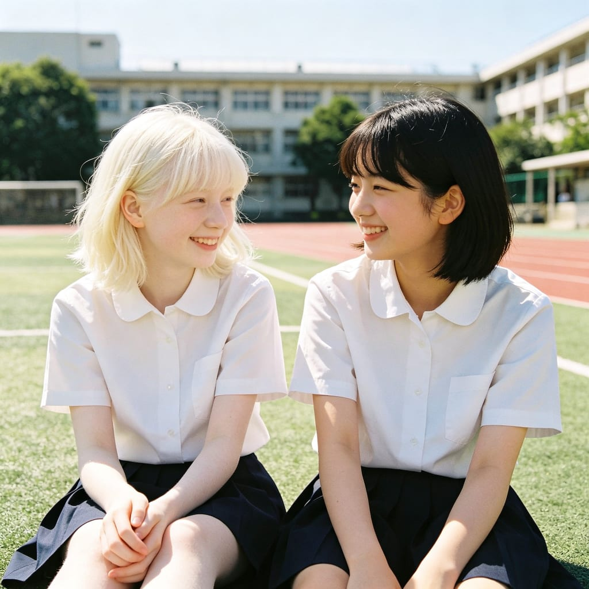
03
「你和别人不一样，但不代表你不好。」
① 从小帮孩子建立积极的自我认同："你和别人不一样，但这不代表你不好"；② 不要过度保护，让孩子在安全范围内尝试各种活动；③ 鼓励孩子表达感受，被欺负或被嘲笑时认真倾听，不要说"别在意"；④ 帮孩子找到优势领域（音乐、绘画、编程等），建立自信；⑤ 青春期特别关注情绪变化，必要时寻求专业心理支持。

04
入学前先说清楚，比事后补救好。
① 入学前主动和班主任沟通，提供医生的诊断和建议；② 要求合理便利：靠前座位、避开窗边、大字教材、允许戴帽子和滤光镜；③ 体育课和户外活动提前说明，可在阴凉处见习或做低强度活动；④ 和老师保持定期沟通，了解孩子的适应情况；⑤ 可以建议学校开展一次关于"差异"的班会，帮助其他同学理解。

05
确诊分型、定期随访、遗传咨询。
① 确诊：建议到有遗传科或皮肤科的三甲医院做基因检测，明确分型；② 随访：皮肤科每年 1–2 次，眼科每 6–12 个月；③ 遗传咨询：如果计划生育二胎，建议夫妻双方做携带者筛查，咨询遗传科医生；④ 警惕综合征型：如果有容易淤青、出血不止、反复感染等情况，及时排查 Hermansky-Pudlak 或 Chediak-Higashi 综合征。
06
公益组织、家长群、康复中心、心理热线。
① 月亮孩子之家（国内白化病公益组织，2008 年成立）：提供信息、交流、倡导；② 各地家长微信群：可以通过公益组织联系本地家长；③ 低视力康复中心：可以申请助视器和康复训练；④ 残疾人证：视力达到标准可以办理，享受相关政策福利；⑤ 心理援助热线：12356（全国心理援助热线）。
孩子需要多久做一次眼科检查？白化病患者可以生育吗？
01
这里是打气墙。说一句鼓励自己的话，或者分享一件今天做到的小事。你的话会被其他岛内人看到。
发布前请确认内容不包含个人隐私信息。月亮岛不会把你的身份信息展示给任何人。
选一轮最像今天的月亮，写一句话。心情广场只有岛内人能看到，完全匿名。
上弦月 · 有点亮，也有点没准备好
你的心情只保存在这座岛上。如果很难受，可以拨打心理援助热线 12356。
有点亮，也有点没准备好
今天不想被看见，但想说一句：真的好累。
匿名 · 私密 · 不显示是谁写的，24 小时后自动沉底；回应同样匿名，没有点赞，也没有比较。
这里只有文字，没有名字。你可以回一句，也可以只是看看。
选一个最像今天的月亮。不想说，也可以只留一轮新月。
上弦月 · 有点亮，也有点没准备好
小提示：天气预报里的紫外线指数到了 6 以上，就要按"极强"来准备。这里的建议是通用常识，具体方案请听皮肤科医生的。
兔兔的小屋在你的每一次到访里慢慢长大。断掉的那些晚上，屋子不会变旧，只会少亮一盏灯。
这里的每一项都真的会改变界面，不是装饰。你可以随时调回来。
已通过年龄确认 · 内容默认仅好友可见
头像使用插画，露出皮肤的照片需要二次确认
只有守护者和主持房间的志愿者能主动联系你
如果你正在经历很难受的时刻，这里随时可以拨通心理援助热线：12356（全国心理援助热线）。
这不是权限高低，是两种完全不同的来意。随时随地都能换。
岛外人能看科普、打气墙、故事和夜谈室；看不到心情广场，也看不到任何人的身份信息。走完 9 课并答对测验，可以拿到守护者徽章。
三道题。答错没有惩罚，会告诉你是哪一句被说反了。
现在你可以申请进入夜谈室做志愿者，也可以在打气墙发帖了。徽章不代表你懂他们，只代表你愿意先听。
这些守则是为了让每一个进来的人都感到安全。违反守则会被主持人请出房间。
不问真实姓名、学校、住址、照片。这里的身份就是你的月亮名。
所有对话在房间里公开进行。不私下加联系方式，保护未成年人。
这里不是课堂，不评价别人的选择。"你应该..."这类话请留在门外。
不推荐具体药物、治疗方案。就医请去正规医院，听皮肤科和眼科医生的。
房间里听到的内容，不截图、不转发、不在别的地方提起。
有人只想听不想说，这完全可以。不追问、不催促"你怎么不说话"。
如果某句话让你不舒服，可以直接说"我想跳过这个话题"，主持人会介入。
如果你正在经历很难受的时刻，可以拨打心理援助热线 12356，或告诉主持人。
守则不是限制，是保护。每一条都是以前的岛民用不舒服的经历换来的。
小夜灯 回复了你的帖子："海边！我一直不敢去，怕晒。"
2 分钟前半格光 等 3 人送给你的帖子 128 颗星
15 分钟前恭喜你解锁「防晒达人」徽章！连续打卡 7 天
1 小时前月光碎片 回复了你的帖子："我去年也去了，一开始很紧张"
昨天今日紫外线极强（8.2），记得涂防晒戴帽子哦
昨天 08:00云层以上 点赞了你的心情记录
3 天前只有岛内人能看到你的身份信息。通知可以在设置里关闭。
月亮岛 · 高保真交互原型 | 点击卡片、标签、开关都可以操作 | 右上角 ⓘ 看设计说明